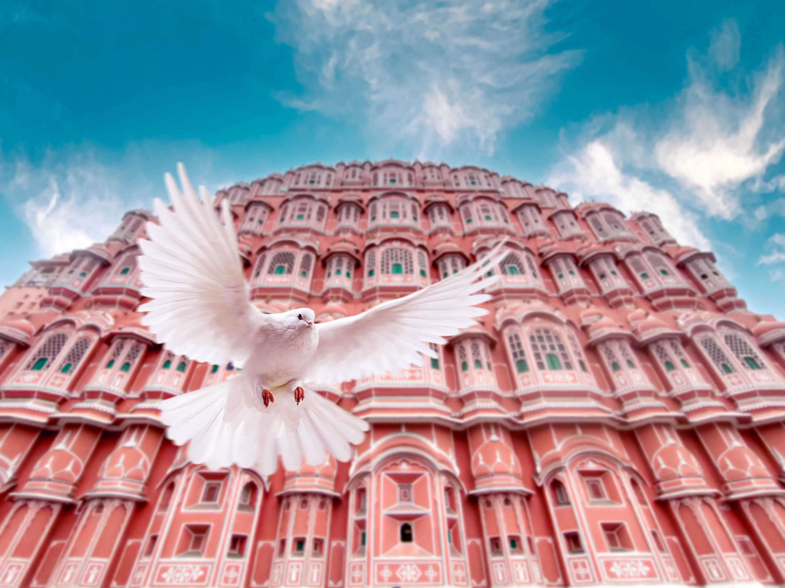
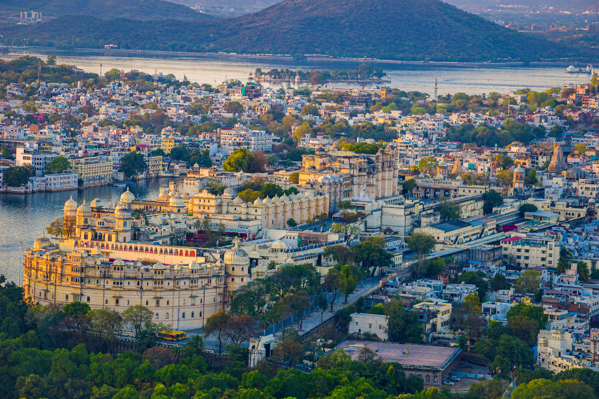
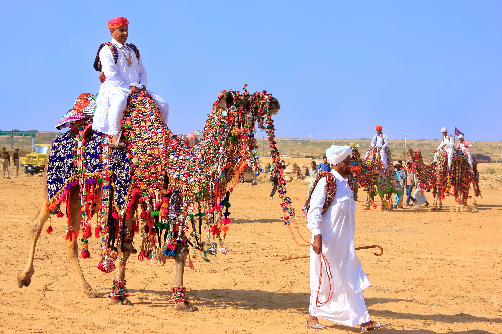
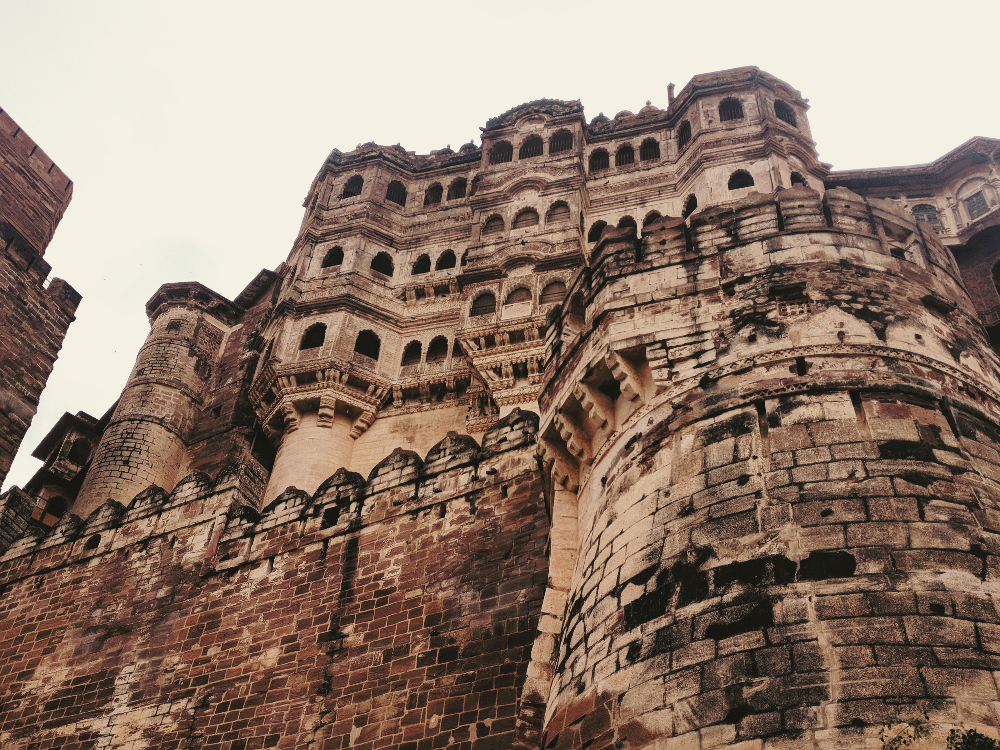
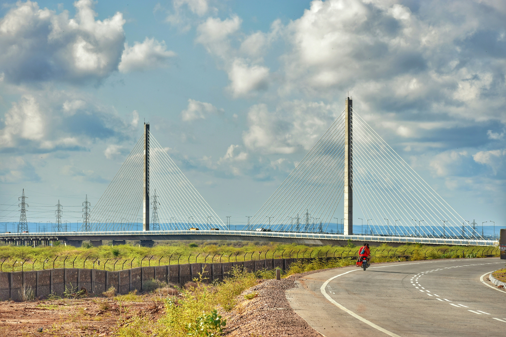
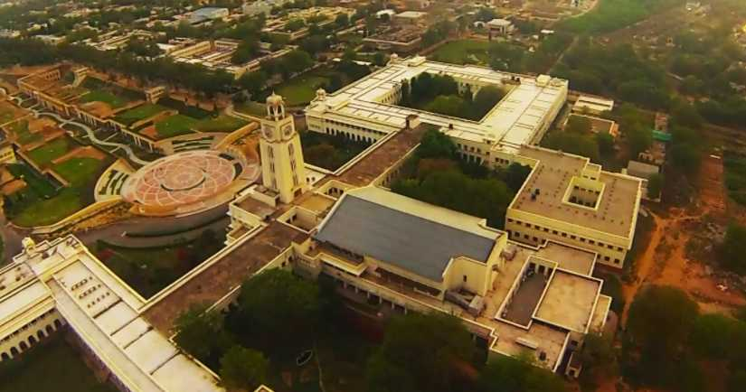

Welcome To Our Dream Place Rajasthan
Historic Hub
Jaipur
Jaipur, the capital city of Rajasthan, stands as a jewel in the crown of the Golden Triangle, alongside Delhi and Agra. This enchanting city, often referred to as the "Pink City," owes its nickname to the terracotta-pink hue that adorns many of its buildings. The Pink City is a testament to the royal heritage of Rajasthan, known for its magnificent palaces, vibrant bazaars, and imposing forts.
Udaipur
Udaipur, the "City of Lakes," stands as a jewel in the crown of Rajasthan, India. Nestled amidst the Aravalli Range, this city captivates visitors with its regal charm, historic grandeur, and scenic landscapes. Located around stunning water lakes and enveloped by the Aravalli Hills in all directions, Udaipur is known for its azure lakes, magnificent palaces, vibrant culture and delectable food. Along with being a must-visit destination, it is also one of the best places to experience luxury in India.
Jaisalmer
Jaisalmer, a mesmerizing destination nestled in the heart of the Thar Desert, is a jewel in the crown of Rajasthan. Often referred to as the "Golden City," Jaisalmer captivates visitors with its sandstone architecture, picturesque landscapes, and rich cultural heritage. The city is adorned with lakes, ornate Jain temples and havelis.
Jodhpur
Jodhpur is the second-largest city in Rajasthan and the former capital of the Marwar region. It is popularly called "the Blue City" as it looks completely blue from an aerial view because of its blue walls and houses. Jodhpur is primarily famous for its temples, lakes and snacks, with the magnificent Mehrangarh Fort being the main attraction.
Pushkar

Pushkar is a small temple town located around 15 km from Ajmer in Rajasthan. A perfect choice for a weekend getaway from Jaipur, Pushkar has an array of cafes and hostels for a backpacking trip. Every November, Pushkar is host to the Pushkar Mela, one of the biggest camel fairs in the country.
Kota
Kota, the third most populous city in Rajasthan, lies alongside the banks of River Chambal, the only perennial river in Rajasthan. Locals and tourists visit the river shores for watching crocodiles, sighting birds and for boat riding in general. Kota is famous for its thriving coaching culture for IIT-JEE and Medical entrance preparations and every year more than four lakh students visit and live in the city. Not many cities witness such influx of students every year and this has earned the city various names such as Education City of India and Coaching Capital of India.
Bharatpur

Now known as the Keoladeo National Park, Bharatpur National Park is a famous avifauna sanctuary and a bird watching paradise listed among UNESCO's World Heritage sites. The 29 km reserve is locally known as Ghana and is a mosaic of dry grasslands, woodlands, woodland swamps, and wetlands. These diverse habitats are home to 366 bird species, 379 floral species, 50 species of fish, 13 species of snakes, 5 species of lizards, 7 amphibian species,7 turtle species, and a variety of other invertebrates. Every year thousands of migratory waterfowl visit the park for winter breeding.
Bhangarh Fort

Famous for the historical ruins and the ghost stories, Bhangarh has been regarded as the most haunted place in the country. It is located on the way between Jaipur and Delhi. The Bhangarh Fort is a 17th Century fort in the Alwar district of Rajasthan. It was built by Bhagwant Das for his son Madho Singh I. It was named by Madho Singh after his grandfather Man Singh or Bhan Singh.
Pilani
Pilani is a small town situated in the Shekhawati region of Rajasthan, mainly renowned for being home to one of the most prestigious educational institutes of the country namely BITS Pilani (Birla Institute of Technology and Science). Grand Havelis and revered shrines are situated in the heart of this quaint town which still reflect the rich saga of the past.